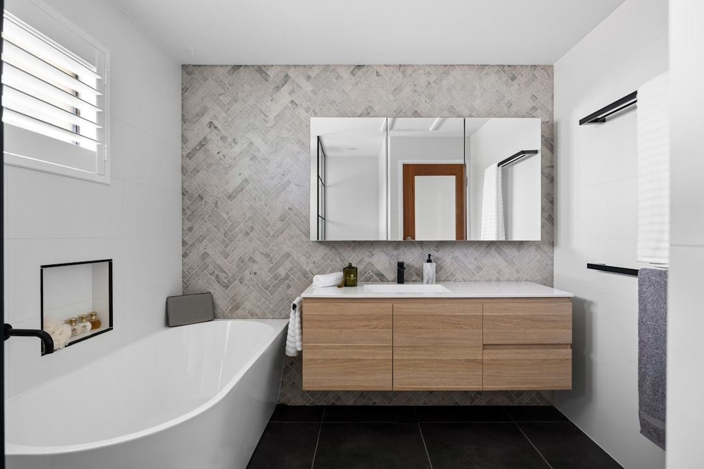

When homeowners compare bathroom renovation cairns options, the real decision is not style first, it is whether the job stays within the current layout or expands into plumbing, waterproofing and contract obligations that change cost and timing. See Bathroom Renovation Cairns for the current service details.
Bathroom Renovation Cairns Explained
The source page for Bathroom Renovation Cairns makes the first budgeting split clear. A compact refresh keeps the room functioning in much the same way and focuses on surfaces, fixtures, vanity, lighting and presentation. A deeper project moves into layout, plumbing, tiling, waterproofing and fixture replacement, which is why two jobs that both look like one bathroom can land in very different price bands.
On the published guide, most projects sit from about $18,000 for a compact refresh to $65,000 or more for a full strip-to-stud renovation with custom joinery and premium fixtures. The variables named there are practical ones, size, layout changes, waterproofing extent, tile choice and plumbing relocation. Before you compare quotes, define which of those items are non-negotiable, then use the renovation checklist to separate must-haves from nicer extras.
Timing follows complexity
Timing follows scope more than room size. The source page says a mid-range project usually takes 4 to 8 weeks from strip-out to handover, smaller refreshes can finish in 2 to 3 weeks, and luxury work with custom cabinetry or stone fabrication may extend to 10 weeks. That makes sequencing important, especially if the bathroom is your only full wet area or if cabinetry and specialist finishes need to be locked in early.
The same page also notes Cairns-specific material and detailing choices, with ventilation, waterproofing and selections suited to humidity and salt air in coastal suburbs. That does not automatically lengthen the job, but it does mean the quote review should cover what is being specified, when waterproofing is completed, and how final handover is timed around tiling, glazing and fit-off. Ask for start and completion dates to be written into the contract rather than left as verbal expectations.
Who this applies to
This guide is most useful when you already know the kind of bathroom problem you are trying to solve, because the right brief changes quickly once the scope is named. The source page groups its services in a way that is useful for decision-making rather than style browsing.
- Full renovation: suited to bathrooms that need a strip-to-stud reset, layout review, plumbing changes, new tiling and new fixtures.
- Small bathroom update: best when the main goal is storage and function without moving walls.
- Ensuite upgrade: relevant when the work is tied to a master bedroom and privacy, storage and fixture choices matter more than a complete floorplan rethink.
- Walk-in shower conversion: a specific option when replacing an over-bath shower or step-through cubicle with a level-entry shower.
- Luxury brief: the source page ties this to custom joinery, freestanding baths and frameless glass, which usually means a wider finish schedule and more decisions before work starts.
Contracts, licences and cover
Contract discipline matters because the compliance threshold is low. The source page states that in Queensland, residential building work over $3,300 including labour and materials must be carried out by a QBCC-licensed contractor and covered by a written Domestic Building Contract. It also says each project starts with a clear, itemised quote, which is the point where scope drift should be caught, not after demolition.
For eligible work over $3,300, the QBCC Home Warranty Scheme is described on the page as compulsory insurance paid by the contractor, covering non-completion, defective work and subsidence issues. The same source gives the defect periods, 6 years and 6 months for structural defects and 6 months for non-structural defects. If you are keeping the same layout, that does not remove the need for licensed plumbing where notifiable work is involved, and the page says the plumber must lodge QBCC Form 4.
Questions worth settling before work starts
Before work begins, the most useful questions are the ones that turn a broad wish list into a signed scope. Ask whether the room is staying in the same layout, whether waterproofing is localised or extensive, which fixtures are already selected, and whether custom joinery is required. Those questions map directly to the cost and timing drivers named on the source page, so they help you compare quotes on like-for-like terms.
It is also worth checking how the builder plans to manage the full sequence from design to handover, because the source page presents that whole pathway, not just isolated trade call-outs. A solid written fixed-price quote should make clear what is included, what is excluded, when site work starts, when it should finish, and what the final handover looks like. If any of that is vague, treat it as a briefing gap, not a minor paperwork issue.
- Enquire with a clear brief. Send through the suburb, budget and what you want changed so the discussion starts with scope rather than guesswork.
- Confirm the layout. Assess the space and decide whether the room stays as-is or moves into a deeper layout and plumbing change.
- Review the written fixed-price quote. Check the itemised quote carefully so inclusions, exclusions and contract obligations are clear before approval.
- Schedule through to handover. Once approved, lock in the work sequence and the dates that take the job from strip-out to final handover.
| Option | Best fit | What usually changes cost and timing |
|---|---|---|
| Layout-preserving refresh | Updating surfaces, fixtures, vanity and lighting while keeping the room arrangement much the same | Extent of waterproofing, fixture selections and finish quality |
| Strip-to-stud renovation | Resetting layout, plumbing, tiling and fixtures | Layout changes, plumbing relocation, waterproofing extent and tile choice |
| Premium upgrade | Projects built around a higher-end finish brief | Custom joinery, freestanding bath, frameless glass and specialist fabrication |
This guide covers how to frame scope, timing, paperwork and quote checks for a Cairns bathroom project.